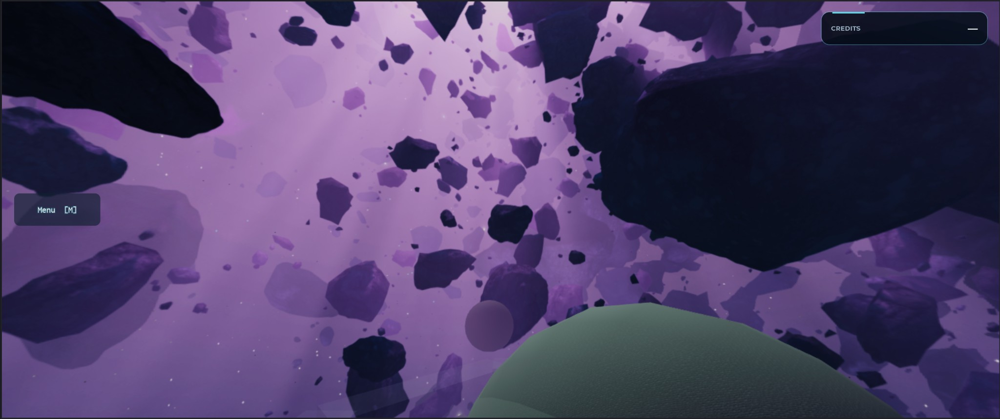

01 / MULTIPLAYER EXPLORATION↗FEATURED PROJECT
Space Explorers
A connected multiplayer adventure, from piloting ships through space to landing on planets and building up your next upgrade.
Inside the systems +
Passenger and gunner seats, planetary gravity, party quests, NPC shops, and ship upgrades. Organized across space and planet places with reusable modules, custom interfaces, and saved progression between worlds.